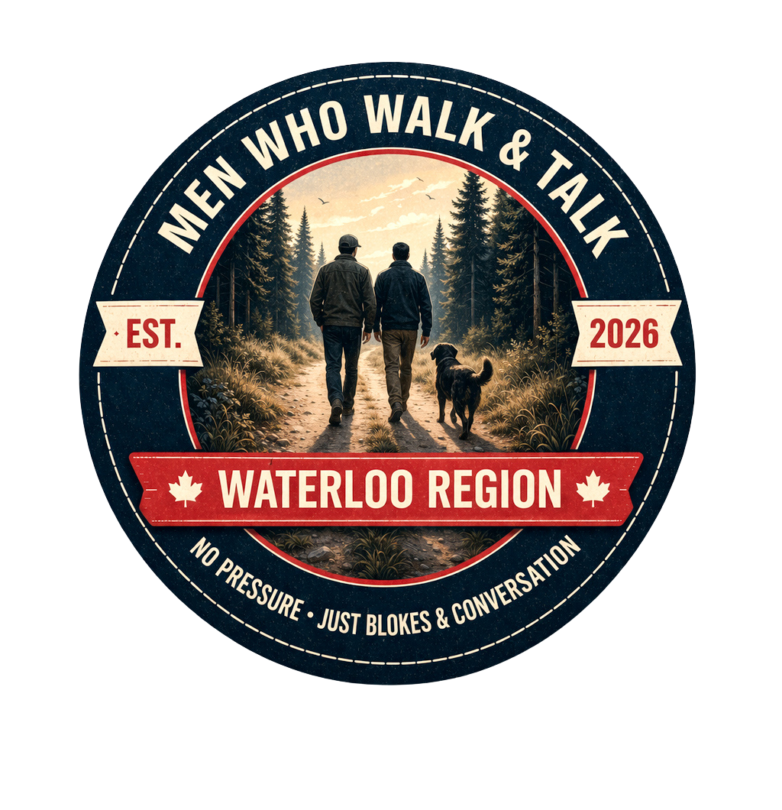

Waterloo Region · Ontario
No pressure. Just blokes & conversation.
Join the Next WalkPrivacy is paramount. What is said on the trail stays on the trail — free from social media filming or digital intrusion.
We are not a structured therapy group or networking event. We are simply walking. Conversation flows naturally without a curriculum.
No need to impress, mask, or perform. Show up exactly as you are — whether you want to vent, listen, or walk in silence.
Why We Walk
In a world that constantly asks men to perform, succeed, or put on a brave face, we offer something different.
No expectations. No judgment. Just a walk through Waterloo Region's beautiful trails with other blokes who understand.
Come to talk. Come to listen. Or just come for the fresh air.
There's no dress code, no fitness requirement, and no preparation needed.
The only rule is to show up.
Come Walk With Us
All are welcome. Just show up as you are.
DM us on Instagram to confirm your spot.
What We Stand For
Men Who Walk & Talk was built by the community, for the community. Every walk is a chance to strengthen the ties that keep us grounded and connected to something real.
Walking is medicine. Talking is medicine. Together, they're a simple and powerful way to support your wellbeing without the weight of a formal commitment or structured program.
What's said on the trail stays on the trail. We don't film. We don't post. We create a space where you can be fully honest — because trust is the foundation of everything here.
Rooted in Waterloo Region, Ontario — we walk the trails, paths, and green spaces of our own backyard. This is a local chapter built for local blokes, Est. 2026.